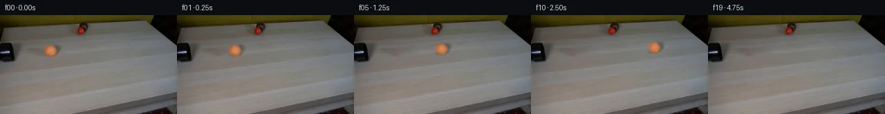

![首帧]()

Round 00
2026-11-04T19:55:01.430734+00:00像素候选变化代码 +127/−0inspection 更新
pixels 6b78b91dd9193bc5 · code 9652cc5686aa2c34
查看本轮 generate.py 真实 diff
--- previous/generate.py
+++ current/generate.py
@@ -0,0 +1,127 @@
+"""Deterministic local image compositing for the supplied locked-camera scene."""
+from pathlib import Path
+import json
+import numpy as np
+from PIL import Image, ImageDraw
+from scipy.ndimage import map_coordinates, gaussian_filter
+from artifact_io import save
+
+ROOT = Path(__file__).resolve().parent
+H, W = 144, 256
+original = np.asarray(Image.open(ROOT / 'first_frame.png').convert('RGB'))
+assert original.shape == (H, W, 3)
+source = original.astype(np.float64)
+yy, xx = np.mgrid[:H, :W].astype(float)
+CX, CY, R = 73.3, 51.7, 7.65
+
+
+def sample_rgb(im, x, y):
+ return np.stack([map_coordinates(im[..., k], [y, x], order=1,
+ mode='nearest') for k in range(3)], axis=-1)
+
+
+def make_background():
+ # Interpolate from undisturbed wood on both sides, following its grain.
+ grain_slope = -0.09
+ left_x, right_x = 55.0, 96.0
+ left = sample_rgb(source, np.full_like(xx, left_x),
+ yy + grain_slope * (left_x - xx))
+ right = sample_rgb(source, np.full_like(xx, right_x),
+ yy + grain_slope * (right_x - xx))
+ weight = np.clip((xx-left_x)/(right_x-left_x), 0, 1)[..., None]
+ interpolated = left*(1-weight) + right*weight
+ # A very weak grain residual from nearby wood prevents a textureless fill.
+ donor = sample_rgb(source, xx+32, yy+32*grain_slope)
+ high = donor-gaussian_filter(donor, sigma=(1.6, 3.0, 0))
+ interpolated += 0.55*high
+ # Include the ball and its soft shadow extending to the upper right.
+ d_ball = np.sqrt(((xx-CX)/11.7)**2 + ((yy-CY)/10.5)**2)
+ d_shadow = np.sqrt(((xx-80.5)/12.8)**2 + ((yy-50.0)/10.2)**2)
+ distance = np.minimum(d_ball, d_shadow)
+ feather = np.clip((1.18-distance)/0.20, 0, 1)
+ feather = feather*feather*(3-2*feather)
+ return source*(1-feather[..., None])+interpolated*feather[..., None]
+
+
+background = make_background()
+# Recover the source ball's diffuse shading and photographic soft boundary.
+# The difference image also contains its measured, fixed-light contact shadow.
+delta = source-background
+alpha = gaussian_filter((np.hypot(xx-CX, yy-CY) <= R).astype(float), 0.85)
+alpha[np.hypot(xx-CX, yy-CY) > 11.5] = 0
+support = ((xx >= 57) & (xx <= 97) & (yy >= 36) & (yy <= 67))
+alpha *= support
+delta *= support[..., None]
+
+
+def render(t):
+ if t == 0:
+ return original.copy()
+ time = t/4.0
+ distance = 43.2*time - 0.45*time*time
+ cx, cy = CX+distance, CY-0.044*distance
+ scale = 1-0.00012*distance
+ sx, sy = CX+(xx-cx)/scale, CY+(yy-cy)/scale
+ moved_delta = sample_rgb(delta, sx, sy)
+ moved_alpha = map_coordinates(alpha, [sy, sx], order=1, mode='constant', cval=0)
+ old_bg = sample_rgb(background, sx, sy)
+ # Keep the opaque orange ball's color independent of the new wood under it.
+ frame = background + moved_delta + moved_alpha[..., None]*(old_bg-background)
+ # Low-contrast felt variation rotates on sphere coordinates. No prominent
+ # seam is introduced, as the source ball has no resolved seam at this scale.
+ nx, ny = (xx-cx)/(R*scale), (yy-cy)/(R*scale)
+ z = np.sqrt(np.maximum(0, 1-nx*nx-ny*ny))
+ angle = distance/R
+ u = nx*np.cos(angle)+z*np.sin(angle)
+ v = z*np.cos(angle)-nx*np.sin(angle)
+ felt = (np.sin(8*u+2*ny)*np.sin(7*v-3*ny)
+ + 0.4*np.sin(15*ny+5*u))
+ interior = np.maximum(0, 1-nx*nx-ny*ny)
+ frame += (0.6*felt*interior*moved_alpha)[..., None]*np.array([1.0, 0.75, 0.45])
+ return np.uint8(np.clip(np.rint(frame), 0, 255))
+
+
+frames = np.stack([render(t) for t in range(20)])
+save(frames, ROOT)
+Image.fromarray(np.uint8(np.clip(np.rint(background), 0, 255))).save(ROOT/'.tmp/background.png')
+
… diff truncated; 40 more lines …